Our Computational Scientific Machine Learning (CSML) Lab is dedicated to developing transformative
computational and data-driven (ML/AI) methodologies to predictive forward/inverse modeling, and control of complex physical systems, ultimately advancing and accelerating scientific discovery.
Our computing resources include computational awards on supercomputing clusters: RPI-AiMOS, Purdue Anvil, NERSC Perlmutter, TAMU Faster, NREL Kestral, New York State Empire-AI Beta system, and a private workstation of 3xA6000 48GB GPUs. Besides, each Ph.D. student is equipped with a high-end workstation with a 3090 24GB GPU.
 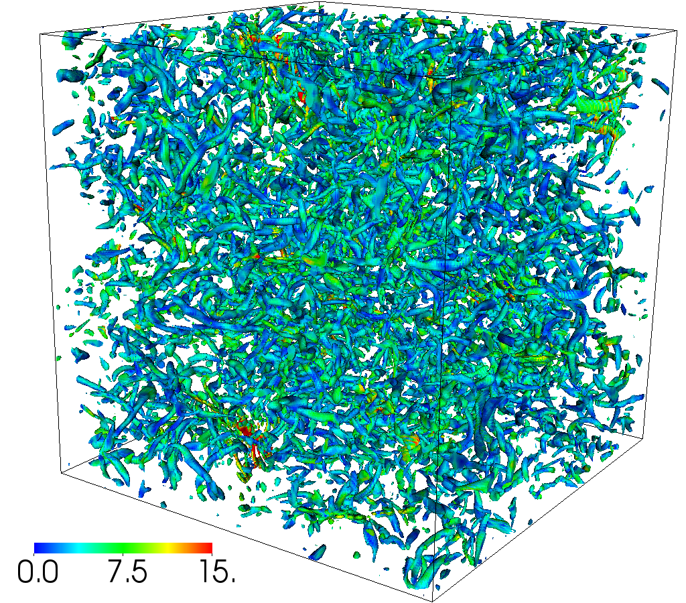
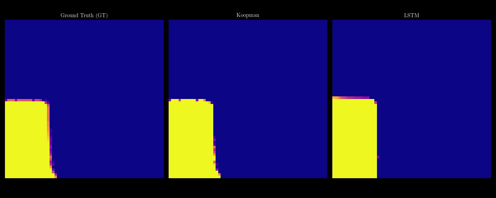
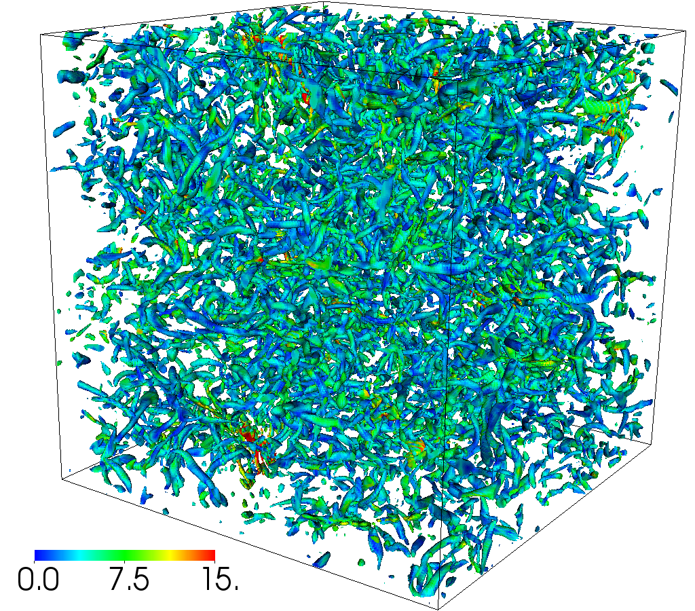
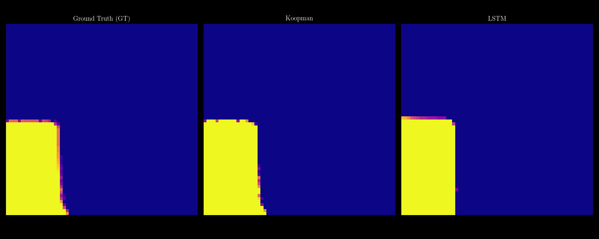
 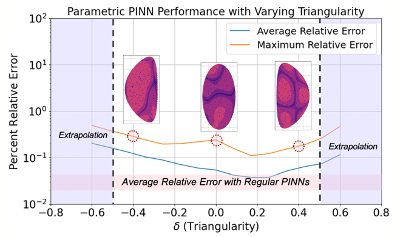
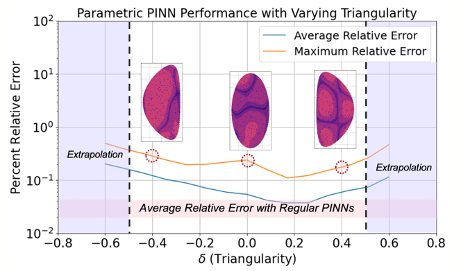
We are hiring! I am actively seeking highly motivated Ph.D. students with a Master's degree in engineering. If you are passionate about scientific machine learning, computational modeling, and advancing the frontiers of AI for physical systems, we encourage you to apply!
To inquire or apply, please send your CV and a brief statement of research interests to pans2@rpi.edu.
To inquire or apply, please send your CV and a brief statement of research interests to pans2@rpi.edu.
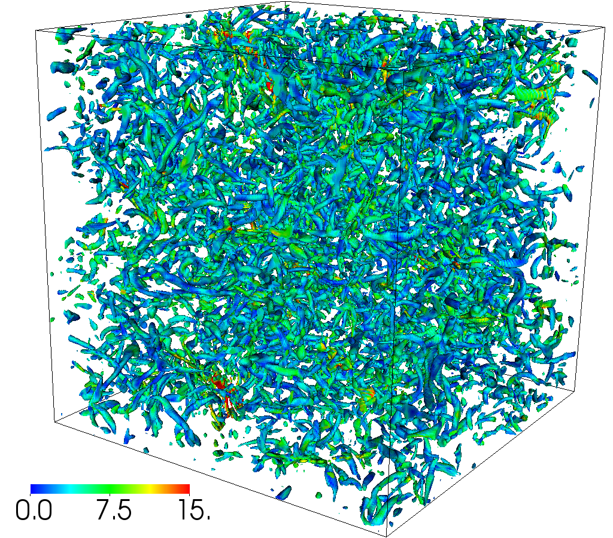
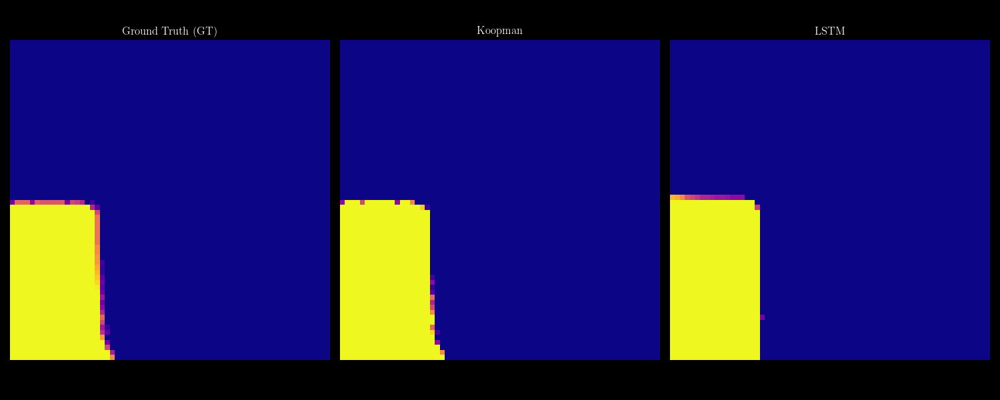
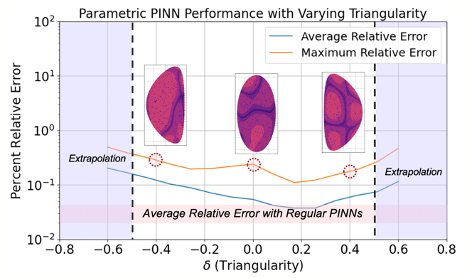
- 12/2025 Ph.D. student Ling Yue published a paper as first author on multi-agent systems for CFD at NeurIPS 2025 Workshop ML4PS [Paper]
- 12/2025 Ph.D. student Ling Yue published a paper as first author on a fine-tuned LLM for OpenFOAM at NeurIPS 2025 Workshop ML4PS [Paper]
- 12/2025 Our collaboration with Min-Ling Zhang and Shimin Di's group on the automatic transformation of MCP from code repository has been published as a NeurIPS 2025 Workshop SEA paper [Paper]
- 12/2025 Our collaboration with Prof. Sicheng He's group at UTK on the largest airfoil dataset has been published at NeurIPS 2025 [Paper] [Code]
- 09/2025 Ph.D. student Shahriar Akbar Sakib published a paper as first author on learning noise-robust stable Koopman operator for control with Hankel DMD in IEEE Transactions on Control Systems Technology [Paper]
- 08/2025 Ph.D. student Nithin Somasekharan published a paper as first author on nonlinear dimensionality reduction with convergence in Proceedings of The Royal Society A [Paper].
- 08/2025 Published a paper on parametric surrogate modeling for heat transfer with UQ in Progress in Nuclear Energy [Paper].
- 06/2025 Received Google Research Scholar Award [Link]
- 05/2025 Presented a work on "Toward Intelligent CFD Workflows in the Era of Large Language Models" at Algorithms For Multiphysics Models In The Post-Moore's Law Era in Los Alamos [Abstract]
- 05/2025 Presented a work on "Deep Koopman Sensing" at 1st International Symposium on AI and Fluid Mechanics [Abstract]
- 04/2025 Ph.D. student Nithin presented a work on "Deep Koopman Sensing" at 2nd ERCOFTAC Workshop on Machine Learning for Fluid Dynamics [Abstract]
- 11/2024 Ph.D. student Weichao presented a work on meshless surrogate models with stability guarantees at APS-DFD 2024 [Abstract].
- 11/2024 Co-advised Ph.D. student Isaac presented a work on data-driven surrogate models that accelerate fluid solver at APS-DFD 2024 [Abstract].
- 11/2024 Ph.D. student Weichao presented a work on meshless surrogate models with stability guarantees at APS-DFD 2024 [Abstract].
- 11/2024 Ph.D. student Nithin presented a work on convergence guaranteed autoencoder at APS-DFD 2024 [Abstract][Paper].
- 11/2024 Ph.D. student Weichao presented a work on meshless surrogate models with stability guarantees at MORE 2024 [Abstract].
- 11/2024 Ph.D. student Shahriar presented a work on learning Koopman operator from data at SIAM New York-New Jersey-Pennsylvania Section Conference [Abstract].
- 10/2024 Presented a work on meshless surrogate models with stability guarantees at AMS Fall Eastern Sectional Meeting [Abstract].
- 09/2024 Published a co-author paper on distributed deep compression of deep sea wavefield data on edge device on Journal of Geophysical Research: Machine Learning and Computation [Paper]
- 04/2025 Ph.D. student Shahriar released a work on noise-robust Koopman operator with physics-informed observables [Paper].
- 07/2024 Presented a work on meshless surrogate models with stability guarantees at WCCM 2024
- 07/2024 Presented a conference paper on learning parametric Koopman operator for hypersonic nonequilibrium flows at AIAA Aviation 2024. [Paper]
- 07/2024 Co-advised student Soha presented a conference paper on learning preconditioner for incomplete LU factorization at AIAA Aviation 2024. [Paper]
- 03/2024 Published a paper on the role of symmetry in lifting and reconstruction of Koopman operator with multiple invariant sets is published on Nonlinear Dynamics [Paper].
- 03/2024 Published a co-author paper on using physics-informed neural network (PINN) for solving plasma physics with different geometry on Physics of Plasmas [Paper][Editor Pick].
- 12/2023 Published a paper on The Journal of Open Source Software on a modular implementation of learning Koopman operator from data [Paper][Code]
- 11/2023 Ph.D. student Nithin presented a work on differentiable finite-element solver using Nvidia Warp at APS-DFD 2023 [Abstract]
- 01/2023 Published a paper meshless representation learning for PDE fields on Journal of Machine Learning Research [Paper]
- American Mathematical Society 2024-
- American Physical Society 2015-
- U.S. Association for Computational Mechanics 2025-
- AIAA Fluid Dynamics Technical Committee 2024-
- IEEE Symposium Series On Computational Intelligence, Technical Committee 2022-
- National Science Foundation, Panelist 2024
- Reviewer for JFM/JCP/Nature Communication/PRF/SIADS/SISC/NeurIPS/IEEE TAC2018
- Google Research Scholar Program 2025
- MICDE Fellowship 2018
- Chinese Outstanding Student Abroad Award (Ministry of Education of China, 500 globally) 2018
- Doctoral Fellowship 2016
- Rackham Summer Award 2015
- Richard and Eleanor Towner Prize for Outstanding Ph.D. Research (Department Nominee) 2019
- SIAM Student Travel Grant 2017
- Best Undergraduate Thesis in Fluid Mechanics (School of Aeronautical Engineering, Beihang University) 2013
- First Prize, College Mathematical Competition (2/1000, Beihang University) 2011
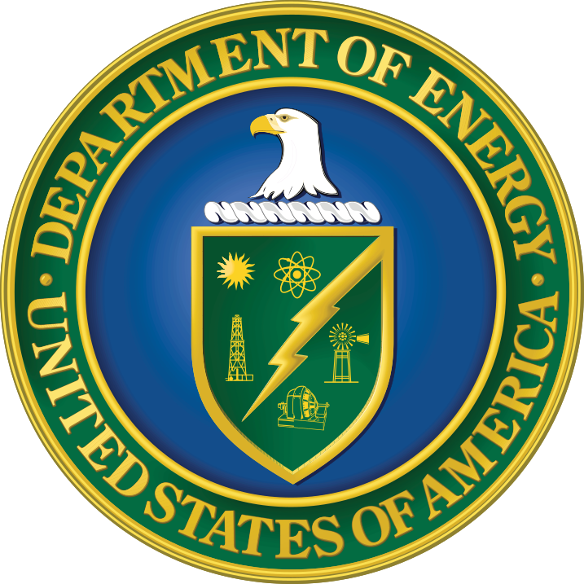
 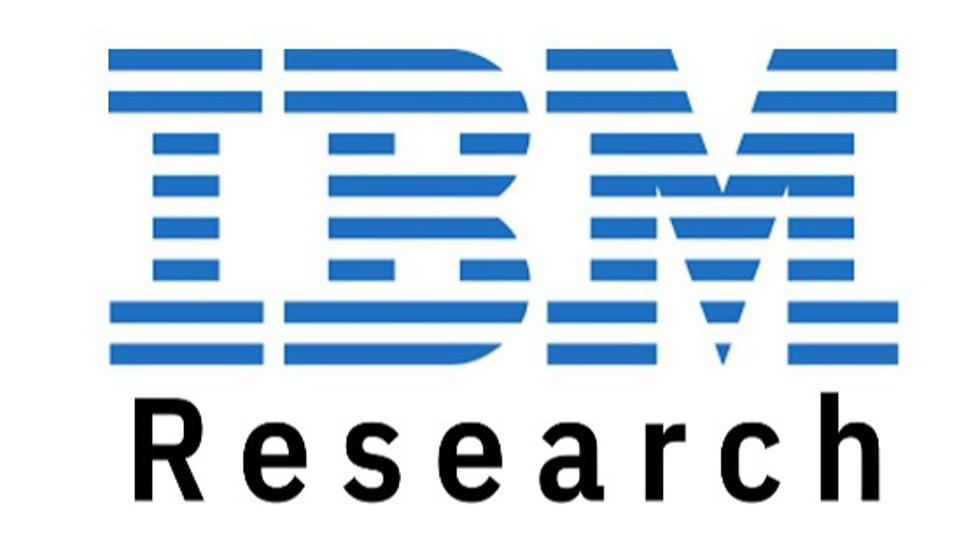
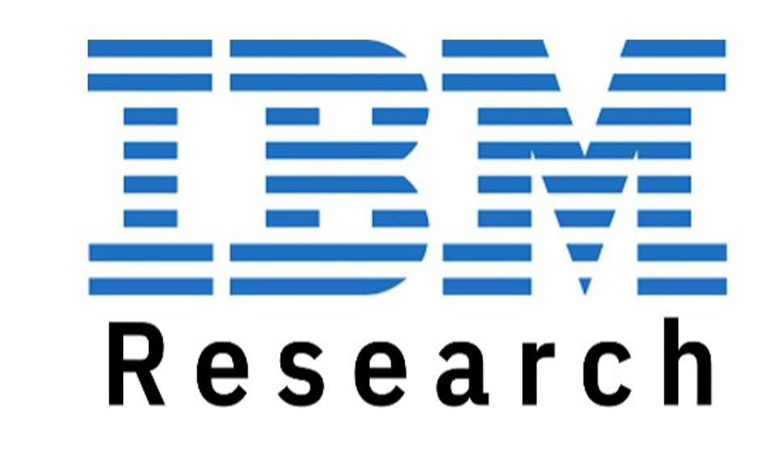

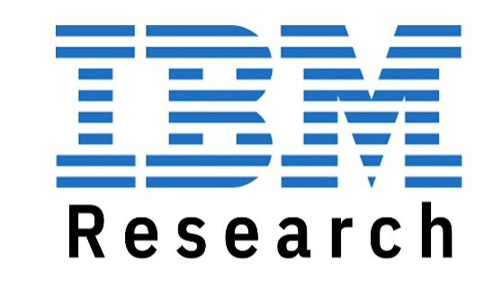